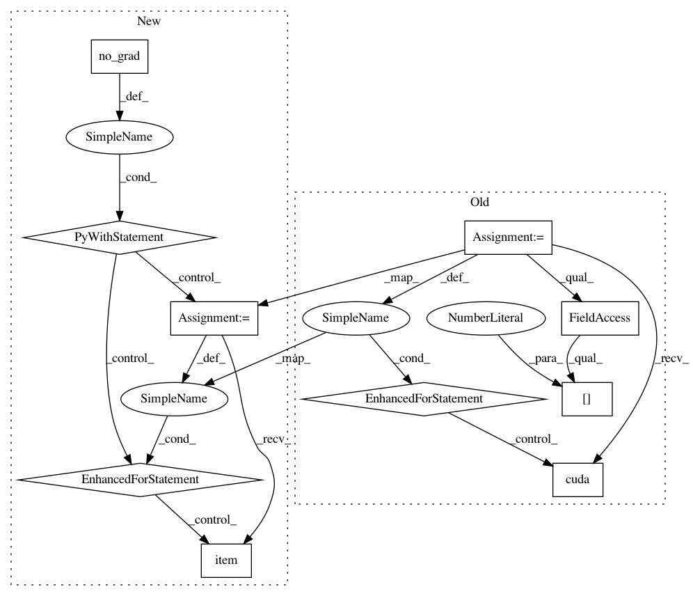

585303417c3f4641f61ac5a916a51505a67cc507,example/mscoco.py,,validate,#Any#Any#Any#Any#Any#Any#,200
Before Change
gt_win, pred_win = None, None
end = time.time()
bar = Bar("Processing", max=len(val_loader))
for i, (inputs, target, meta) in enumerate(val_loader):
// measure data loading time
data_time.update(time.time() - end)
target = target.cuda(async=True)
input_var = torch.autograd.Variable(inputs.cuda(), volatile=True)
target_var = torch.autograd.Variable(target, volatile=True)
// compute output
output = model(input_var)
score_map = output[-1].data.cpu()
if flip:
flip_input_var = torch.autograd.Variable(
torch.from_numpy(fliplr(inputs.clone().numpy())).float().cuda(),
volatile=True
)
flip_output_var = model(flip_input_var)
flip_output = flip_back(flip_output_var[-1].data.cpu())
score_map += flip_output
loss = 0
for o in output:
loss += criterion(o, target_var)
acc = accuracy(score_map, target.cpu(), idx)
// generate predictions
preds = final_preds(score_map, meta["center"], meta["scale"], [64, 64])
for n in range(score_map.size(0)):
predictions[meta["index"][n], :, :] = preds[n, :, :]
if debug:
gt_batch_img = batch_with_heatmap(inputs, target)
pred_batch_img = batch_with_heatmap(inputs, score_map)
if not gt_win or not pred_win:
plt.subplot(121)
gt_win = plt.imshow(gt_batch_img)
plt.subplot(122)
pred_win = plt.imshow(pred_batch_img)
else:
gt_win.set_data(gt_batch_img)
pred_win.set_data(pred_batch_img)
plt.pause(.5)
plt.draw()
// measure accuracy and record loss
losses.update(loss.data[0], inputs.size(0))
acces.update(acc[0], inputs.size(0))
// measure elapsed time
batch_time.update(time.time() - end)
end = time.time()
// plot progress
bar.suffix = "({batch}/{size}) Data: {data:.6f}s | Batch: {bt:.3f}s | Total: {total:} | ETA: {eta:} | Loss: {loss:.4f} | Acc: {acc: .4f}".format(
batch=i + 1,
size=len(val_loader),
data=data_time.val,
bt=batch_time.avg,
total=bar.elapsed_td,
eta=bar.eta_td,
loss=losses.avg,
acc=acces.avg
)
bar.next()
bar.finish()
return losses.avg, acces.avg, predictions
if __name__ == "__main__":
After Change
end = time.time()
bar = Bar("Processing", max=len(val_loader))
with torch.no_grad():
for i, (input, target, meta) in enumerate(val_loader):
// measure data loading time
data_time.update(time.time() - end)
target = target.cuda(async=True)
input = input.to(device, non_blocking=True)
target = target.to(device, non_blocking=True)
// compute output
output = model(input)
score_map = output[-1].data.cpu()
if flip:
flip_input_var = torch.from_numpy(fliplr(input.clone().numpy())).float().to(device)
flip_output_var = model(flip_input_var)
flip_output = flip_back(flip_output_var[-1].data.cpu())
score_map += flip_output
loss = 0
for o in output:
loss += criterion(o, target)
acc = accuracy(score_map, target.cpu(), idx)
// generate predictions
preds = final_preds(score_map, meta["center"], meta["scale"], [64, 64])
for n in range(score_map.size(0)):
predictions[meta["index"][n], :, :] = preds[n, :, :]
if debug:
gt_batch_img = batch_with_heatmap(input, target)
pred_batch_img = batch_with_heatmap(input, score_map)
if not gt_win or not pred_win:
plt.subplot(121)
gt_win = plt.imshow(gt_batch_img)
plt.subplot(122)
pred_win = plt.imshow(pred_batch_img)
else:
gt_win.set_data(gt_batch_img)
pred_win.set_data(pred_batch_img)
plt.pause(.5)
plt.draw()
// measure accuracy and record loss
losses.update(loss.item(), input.size(0))
acces.update(acc[0], input.size(0))
// measure elapsed time
batch_time.update(time.time() - end)
end = time.time()
// plot progress
bar.suffix = "({batch}/{size}) Data: {data:.6f}s | Batch: {bt:.3f}s | Total: {total:} | ETA: {eta:} | Loss: {loss:.4f} | Acc: {acc: .4f}".format(
batch=i + 1,
size=len(val_loader),
data=data_time.val,
bt=batch_time.avg,
total=bar.elapsed_td,
eta=bar.eta_td,
loss=losses.avg,
acc=acces.avg
)
bar.next()
bar.finish()
return losses.avg, acces.avg, predictions
if __name__ == "__main__":
In pattern: SUPERPATTERN
Frequency: 3
Non-data size: 10
Instances
Project Name: bearpaw/pytorch-pose
Commit Name: 585303417c3f4641f61ac5a916a51505a67cc507
Time: 2019-01-24
Author: platero.yang@gmail.com
File Name: example/mscoco.py
Class Name:
Method Name: validate
Project Name: pytorch/examples
Commit Name: 645c7c386e62d2fb1d50f4621c1a52645a13869f
Time: 2018-04-24
Author: soumith@gmail.com
File Name: mnist/main.py
Class Name:
Method Name: test
Project Name: pytorch/tutorials
Commit Name: 0ad33d606682537466f3430fc6d6ac7d47460f1a
Time: 2018-04-24
Author: soumith@gmail.com
File Name: intermediate_source/spatial_transformer_tutorial.py
Class Name:
Method Name: test